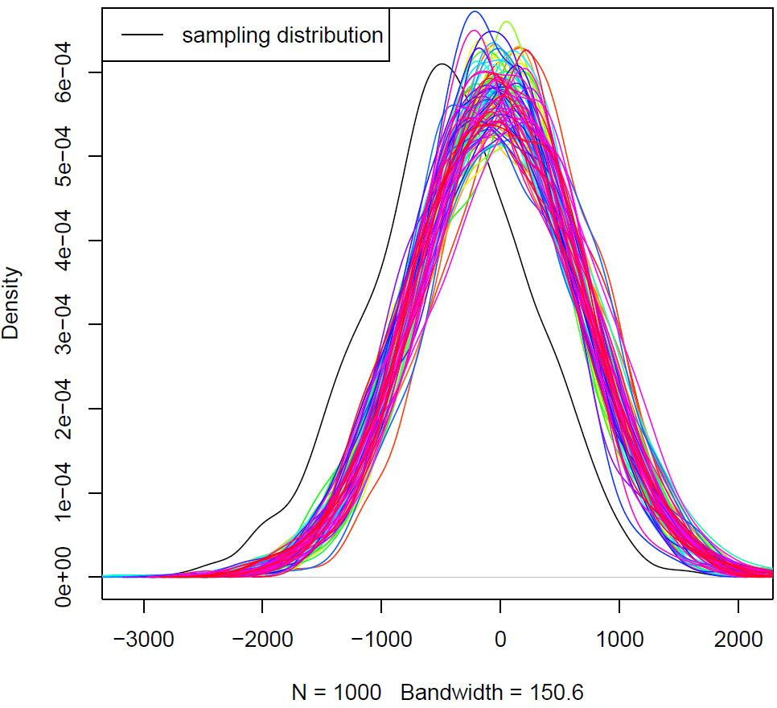

|
I am a final-year PhD candidate (ABD) in political science at UIUC, my research interests are in the use of computational and statistical methods to study important substantive questions related to mass political behavior and political economy in the American and comparative contexts. I have done research projects on dynamic modelling of mass partisan polarization and segregation, the contextual and temporal variation of individuals' attitudes towards globalization, social network cascading and the validity of different synthetic control methods, the use of bootstrap for uncertainty quantification for ATT estimates from matching, nationalization of polarization communications and partisan polarization, consistency of machine learning model evaluation under diverse data scenarios, etc. My research aims to address the complexity in society and politics, and bridge the gaps between computational theoretical models, causal inference and empirical data analysis. |

|
|
|
|
|
PolMeth2024, APSA2025. Both partisan polarization and partisan segregation are phenomena of great concern in the US in recent decades. Existing research that looks at mass partisan polarization and geography in conjunction focuses exclusively on the extent of partisan geographical sorting but neglects the substantial effect geographical context can have on the formation of mass partisan polarization. This paper shows that while partisan geographical sorting can happen to a certain extent, it only happens in spaces where there is a certain level of partisan segregation to start with. In essence, geographical context’s effect on partisan polarization is more substantial than partisanship’ effect on geographical sorting, a surprising result given current literature’s focus on the latter rather than the former. Paper |
|
PLOS ONE, 2024 The proper use of model evaluation metrics is important for model evaluation and model selection in binary classification tasks. This study investigates how consistent different metrics are at evaluating models across data of different prevalence while the relationships between different variables and the sample size are kept constant. Analyzing 156 data scenarios, 18 model evaluation metrics and five commonly used machine learning models as well as a naive random guess model, I find that evaluation metrics that are less influenced by prevalence offer more consistent evaluation of individual models and more consistent ranking of a set of models. In particular, Area Under the ROC Curve (AUC) which takes all decision thresholds into account when evaluating models has the smallest variance in evaluating individual models and smallest variance in ranking of a set of models. A close threshold analysis using all possible thresholds for all metrics further supports the hypothesis that considering all decision thresholds helps reduce the variance in model evaluation with respect to prevalence change in data. The results have significant implications for model evaluation and model selection in binary classification tasks. Paper | Code |
|
The synthetic control method is increasingly being used to estimate the effect of an intervention when units of interest are at the aggregate level and there does not exist suitable control units to serve as the counterfactual for the treated unit. However, the validity of the method has not been examined under complex settings where there could either be interaction effects among the covariates used to estimate the optimal synthetic control unit or where there could be a network cascading process happening within the treated unit at the same time as the intervention of interest. This paper shows that a number of commonly used synthetic control methods provide biased estimates of the causal effect of interest when there is only a small amount of pairwise interactions among the covariates and their coverage rates significantly decrease when there is an interaction between within treatment unit network cascading and the intervention of interest. As a result, this paper provides new insights about the validity of synthetic control methods under more complex analytical settings. |
|
Proceedings of 14th International Conference on Complex Networks and Their Applications (peer-reviewed and accepted), 2025 Existing research that studies the relationship between nationalized politics and partisan polarization focuses mostly on electoral politics, this paper examines the relationships between nationalization in terms of partisan interactions and mass partisan ideological polarization. In particular, through computational modeling, we highlight that as political communication becomes increasingly nationalized, individuals become more responsive to nationalized salient partisan news and media contents, which in turn leads to more intense partisan polarization process. |

|
ACIC 2024 This paper examines the performance of bootstrap methods for quantifying the uncertainty of causal effect estimates from matching. In particular, it investigates the performance of three existing approaches as well as a newly one. The proposed non-parametric bootstrap method quantifies the uncertainty of average treatment effect estimate by first quantifying the uncertainty associated with the sample treatment group by bootstrapping the treatment group first and then finding the counterpart control group by pair matching on estimated propensity score without replacement. Through Monte Carlo simulation and analysis of the CPS data set, the results show that all bootstrap standard error estimates can deviate from the true sample standard error if the data becomes in-permissible for matching. And most bootstrap methods provide satisfactory coverage rate of 95 percent or above but only when percent treated in the sample data is small. Paper |
|
|
- invited talk at Department of Political Science, University of Chicago quantitative methods workshop 2025
- invited talk at Binghamton, Fudan, LSE 2025.
- Student Faculty Seminar at UIUC 2024.
- Society for Causal Inference Annual Meeting 2024.
- Empirical Emplications of Theoretical Models Summer Institute at Emory University 2024.
- Graduate Student Exchange at Washinton University at St Louis 2023.
- Society of Political Methodology Annual Meeting 2023, 2024, 2025.
- Midwest Political Science Assocaition Annual Meeting 2023, 2024, 2025.
|
|
- Instructor: undergraduate online course PS 305 US Supreme Court, UIUC, 2024.
- Methods TA : graduate quantitative methods sequence courses PS 530, PS 531, PS 532, UIUC, 2023-2025
- Discussion section leader: PS 241 Comparative Politics in the Global South, UIUC, 2025.
- TA: undergraduate course PS 343-Governance and Politics of China, UIUC, 2021.
- Teaching Materials: Spatial Analysis | Interactive Web Map Making
- Syllabus: Computational Social Science
|
|
- Invited reviewers: Jouranl of Machine Learning Research, American Political Science Review, Chinese Political Science Review.
- Math Camp Instructor, UIUC.
|
|
- Rita and Leonard Ogren Award for Best Conference Paper (Department of Political Science, UIUC) 2025
- NSF Empirical Implications of Theoretical Models Summer Institute (Emory University) 2024
- Kneier Fellowship (Department of Statistics, UIUC) 2024
- NSF Travel Award for PolMeth Meeting (UC Riveside) 2024
- NSF Travel Award for PolMeth Meeting (Stanford University) 2023
- Schroeder Graduate Fellow (Cline Center for Advanced Social Research, UIUC) 2022